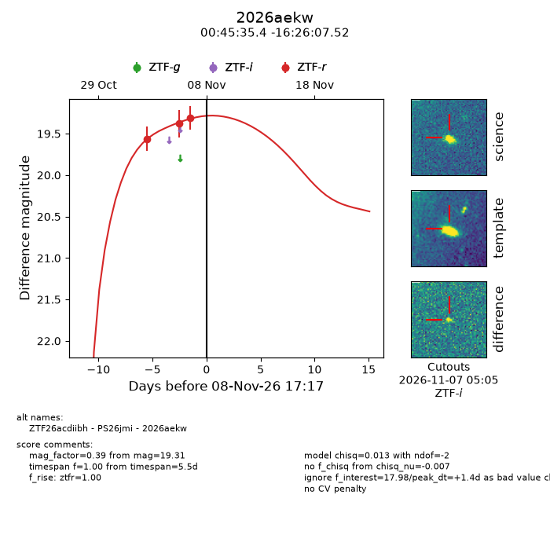
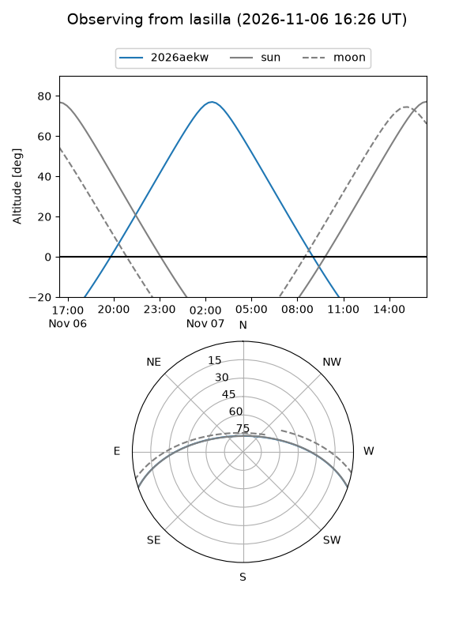
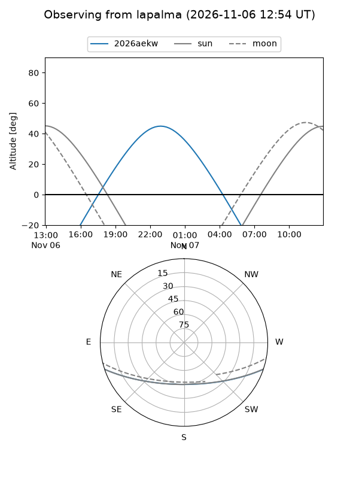
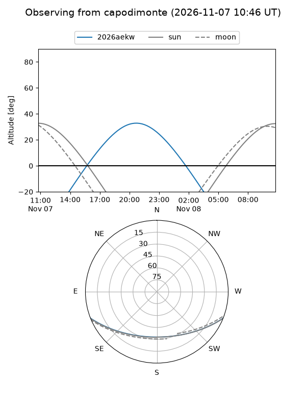
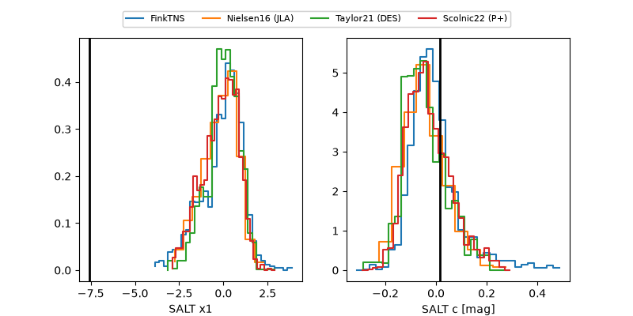

2026aekw
Target 2026aekw at 2026-11-08 17:21
Aliases and brokers:
FINK-ZTF: ztf.fink-portal.org/ZTF26acdiibh
Lasair-ZTF: lasair-ztf.lsst.ac.uk/objects/ZTF26acdiibh
ALeRCE-ZTF: alerce.online/object/ZTF26acdiibh
YSE-PZ: ziggy.ucolick.org/yse/transient_detail/2026aekw
TNS name: wis-tns.org/object/2026aekw
Direct TNS query: direct search
alt names
ZTF26acdiibh (ztf,fink_ztf)
2026aekw (tns,yse)
PS26jmi (panstarrs)
Coordinates:
equatorial (ra, dec) = 11.3975,-16.43542
equatorial (HMS+DMS) = 00:45:35.39,-16:26:07.52
galactic (l, b) = (115.4128,-79.22170)
Flags:
peak dt: +1.4
Photometry:
last ztfr=19.31
3 ztfr detections
Lightcurve

Visibility



Additional plots
